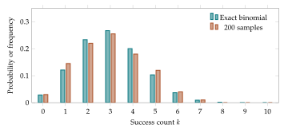

See stochastic recurrences as discrete continuity equations, while keeping finite sampling as an application.
Probabilities move between states
Suppose a system has finitely many labeled locations. A column-stochastic matrix \(K\) assigns probabilities of arriving at location \(i\) from each starting location \(j\): $\(K_{ij}\geq0,\qquad\sum_iK_{ij}=1.\)\( If \)p_n\( is the current probability vector, one step is \)\(\boxed{p_{n+1}=Kp_n,\qquad\Delta p_n=(K-I)p_n.}\)\( The second formula is a vector-valued difference equation. Because the columns of \)K\( sum to one, the sum of the coordinates of \)\Delta p_n$ is zero. Probability is redistributed rather than created.
A current on a graph
Picture locations as vertices and possible transitions as edges. Let \(J_{ij,n}=-J_{ji,n}\) be the net probability current from \(i\) to \(j\) during step \(n\). Define outgoing divergence by $\(\operatorname{div}J_n(i)=\sum_{j\sim i}J_{ij,n}.\)\( The discrete continuity equation is \)\(\boxed{\Delta p_n(i)=-\operatorname{div}J_n(i).}\)\( If we sum this equation over every vertex, each current appears twice with opposite signs. Therefore \)\sum_i p_{n+1}(i)=\sum_i p_n(i)$. This is an exact conservation law.
An example on three locations
Consider a path \(A\)–\(B\)–\(C\). At each step, move one quarter of the probability at each location to each adjacent location, leaving the rest where it was. The resulting matrix is $\(K=\begin{pmatrix}3/4&1/4&0\\1/4&1/2&1/4\\0&1/4&3/4\end{pmatrix}.\)\( Starting with all the probability at \)A\( gives \)p_0=(1,0,0)\( and \)p_1=(3/4,1/4,0)\(. Thus \)\Delta p_0=(-1/4,1/4,0)\(: one quarter of the total mass crossed edge \)A\(–\)B$.
A fixed point of the transport rule satisfies \(Kp=p\). Here the uniform distribution \((1/3,1/3,1/3)\) is fixed. Stationarity does not always imply that every trajectory converges: a deterministic cyclic permutation has periodic orbits.
Counts and sampled probabilities
The probability vector above describes a distribution of mass. Another model could draw \(N\) independent samples from that distribution and retain only the observed integer counts. The probability of each possible count table is then determined by binomial or multinomial counting. The expected proportions follow the matrix update, but a particular sample generally fluctuates around them.
This distinction explains the role of counting in discrete information geometry: probability transport determines the expected distribution, and combinatorics describes possible finite observations of it.
Further investigations and applications
Probability describes both a population’s composition and the uncertainty of an observation. If a population has proportions \(p_A,p_B,p_C\) and one individual is chosen uniformly, these proportions are the probabilities of the observed type. Repeating the observation produces a sample. Its composition fluctuates, even when the underlying population stays fixed.
Counting tells us which sample compositions are possible and how many ordered samples produce each one. It supplies exact formulas for uncertainty at a finite sample size.
Outcomes, events, and trees
An outcome is a single possible result. An event is a collection of outcomes. For a finite probability model, the probability of an event is the sum of the probabilities of its outcomes. The total probability of all outcomes is one.
Two observations are independent when the probability of a specified pair is the product of the individual probabilities. More generally, the probability of an ordered independent sample \((i_1,\ldots,i_N)\) is \(p_{i_1}\cdots p_{i_N}\). A tree represents this multiplication: each level is another observation, and the probability of a leaf is the product of the branch probabilities along its path.
Example. Sampling with and without replacement
A box contains two red tokens and one blue token. Two draws with replacement give \(P(RB)=(2/3)(1/3)=2/9\). Without replacement, the second draw depends on the first, and \(P(RB)=(2/3)(1/2)=1/3\). The independent-sampling formulas below apply to the first procedure. A finite-population procedure without replacement requires its own probabilities.
Binomial counting
Suppose each observation is a success with probability \(p\) and a failure with probability \(1-p\). An ordered sample with \(k\) successes has probability \(p^k(1-p)^{N-k}\). The successes can occupy \(\binom Nk\) different sets of positions, where \[\binom Nk=\frac{N!}{k!(N-k)!},\qquad N!=1\cdot2\cdots N,\quad 0!=1.\] Therefore the success count \(K\) has the binomial distribution \[P(K=k)=\binom Nk p^k(1-p)^{N-k},\qquad k=0,\ldots,N.\] The binomial coefficient counts positions, while the powers account for their probabilities. Keeping these two roles separate helps prevent common mistakes.
Example. Exactly three successes
With \(N=5\) and \(p=2/3\), the probability of exactly three successes is \[\binom53(2/3)^3(1/3)^2=80/243.\] The probability of one particular ordered sample, such as \(SSFSF\), is only \(8/243\). There are ten orders with the same count.
Adding the binomial probabilities gives one. This follows either because the counts partition all possible samples or by expanding \((p+(1-p))^N\) and grouping terms by the number of factors \(p\).
Multinomial counts and empirical distributions
For \(k\) categories, let \(n_i\) be the observed count of category \(i\), so \(\sum_i n_i=N\). The number of ordered samples with these counts is \[\Omega(n_1,\ldots,n_k)=\frac{N!}{n_1!\cdots n_k!}.\] One derivation chooses the positions of category one, then category two among the remaining positions, and continues. The resulting binomial coefficients telescope to the displayed ratio.
The probability of this count vector is \[P(n_1,\ldots,n_k)=\Omega(n_1,\ldots,n_k)\prod_i p_i^{n_i}.\] The empirical distribution is \(\widehat p_i=n_i/N\). It belongs to the token lattice of Chapter 3. Several ordered samples can have the same empirical distribution, and \(\Omega\) measures this multiplicity. If \(n_i=0\), the factor \(p_i^{n_i}\) is taken as one, including when \(p_i=0\); no observation of that category is being required.
Example. A count vector on the triangle
For \(N=4\) and counts \((2,1,1)\), the multiplicity is \(4!/(2!1!1!)=12\). Under \(p=(1/2,1/3,1/6)\), each compatible ordered sample has probability \((1/2)^2(1/3)(1/6)=1/72\). The count vector therefore has probability \(12/72=1/6\).
Expectation and spread from finite sums
A random variable assigns a numerical value to each outcome. If it takes values \(x_i\) with probabilities \(p_i\), its expectation is \[\mathbb E[X]=\sum_i p_ix_i.\] This weighted average describes the center of its distribution. Its variance is the average squared distance from that center: \[\operatorname{Var}(X)=\sum_i p_i(x_i-\mathbb E[X])^2 =\mathbb E[X^2]-(\mathbb E[X])^2.\] The last equality follows by expanding the square and using \(\sum_i p_i=1\). Variance is nonnegative. Its square root, the standard deviation, has the same units as the original readings.
Example. A finite measurement table
Suppose a device reads \(0,1,3\) with probabilities \(1/2,1/3,1/6\). Its mean is \(0+1/3+3/6=5/6\). Its second moment is \(0+1/3+9/6=11/6\), so its variance is \(11/6-25/36=41/36\). The mean need not be one of the possible readings.
For two random variables, finite-sum expansion gives \(\mathbb E[X+Y]=\mathbb E[X]+\mathbb E[Y]\), whether or not they are independent. For independent variables, multiplication of probabilities also gives \(\mathbb E[XY]=\mathbb E[X]\mathbb E[Y]\). Expanding the square then shows that independent variances add.
Apply these facts to indicator variables \(I_t\), equal to one on a success and zero on a failure. They satisfy \(\mathbb E[I_t]=p\) and \(\operatorname{Var}(I_t)=p(1-p)\). Since \(K=I_1+\cdots+I_N\) for independent trials, \[\mathbb E[K]=Np,\qquad \operatorname{Var}(K)=Np(1-p).\] Dividing by \(N\) gives the empirical proportion’s mean and variance: \[\mathbb E[\widehat p]=p,\qquad \operatorname{Var}(\widehat p)=\frac{p(1-p)}{N}.\] Thus a fourfold increase in sample size halves the standard deviation. A particular sample may still fluctuate more than an earlier smaller sample; the formula concerns the distribution over repeated samples.
Rare categories and missing observations
If a category has probability \(p>0\), the chance of missing it in all \(N\) independent observations is \((1-p)^N\). A zero empirical count therefore does not establish that the underlying probability is zero. This matters when empirical probabilities will later appear inside logarithms or ratios.
Example. How often is a rare type missed?
A type with probability \(1/20\) is absent from a sample of size \(20\) with probability \((19/20)^{20}\approx0.3585\). Even though its expected count is one, observing no copies is quite common. At size \(100\), the probability of missing it is approximately \(0.00592\).
The deterministic update of a composition and the random sampling of a composition can be combined in a two-stage model. First compute \(p^+\) using a growth rule. Then draw a multinomial sample of size \(N\) with probabilities \(p^+\). The conditional average of the sampled composition is \(p^+\), but the realized composition is a random lattice point. This provides a precise way to model finite-population variation.

Conditional probability and dependent draws
If an event \(B\) has positive probability, the conditional probability of \(A\) given \(B\) is \(P(A\mid B)=P(A\cap B)/P(B)\). Here \(A\cap B\) means that both events occur. Rearranging gives the multiplication rule \(P(A\cap B)=P(B)P(A\mid B)\). Independence is the special case in which conditioning on one event does not change the probability of the other.
An outcome tree can therefore represent dependent observations as well. Its branch probabilities must be conditioned on the path already followed. The product along a path still gives the leaf probability. What changes is the branch labeling.
Example. Two red tokens without replacement
A box has three red and two blue tokens. The probability of two red draws without replacement is \((3/5)(2/4)=3/10\). With replacement it is \((3/5)^2=9/25\). In the first procedure, observing a red token changes the available composition. The second red branch must use the updated box, rather than the initial probability.
Why multinomial probabilities add to one
There are \(k^N\) ordered length-\(N\) samples from \(k\) labels. Each receives its product probability. Summing over all possible labels at the first position, then the second, and continuing gives \[\sum_{i_1,\ldots,i_N}p_{i_1}\cdots p_{i_N}=(p_1+\cdots+p_k)^N=1.\] Grouping these ordered samples by their count vectors replaces each collection of equal products with its multiplicity times one product. The resulting sum is exactly the sum of the multinomial probabilities. This establishes normalization and explains the multinomial expansion as a grouping of outcomes.
At \(N=2\) with three labels, there are nine ordered samples but only six count vectors. The vectors \((2,0,0)\), \((0,2,0)\), and \((0,0,2)\) each have multiplicity one. The three other vectors each have multiplicity two. Counting a vector once without this factor would omit ordered outcomes.
A finite bound on sampling error
Variance can control the probability of a large error using a simple comparison of sums. For a random variable \(X\) with mean \(\mu\), every outcome satisfying \(|X-\mu|\geq a\) contributes at least \(a^2\) to the squared deviation. Therefore \[\operatorname{Var}(X)=\mathbb E[(X-\mu)^2]\geq a^2P(|X-\mu|\geq a),\] and hence \(P(|X-\mu|\geq a)\leq\operatorname{Var}(X)/a^2\). This is Chebyshev’s inequality. The argument works for a finite distribution by comparing the indicated terms in its expectation sum.
For an empirical binary proportion, it gives \[P(|\widehat p-p|\geq\varepsilon)\leq\frac{p(1-p)}{N\varepsilon^2}\leq\frac{1}{4N\varepsilon^2}.\] The last inequality follows from \(p(1-p)=1/4-(p-1/2)^2\leq1/4\). This bound is often conservative, but it is valid for every \(p\) under independent sampling.
Example. Choosing a sample size from a bound
To make the probability of an empirical error of at least \(0.1\) no greater than \(0.05\), uniformly over binary probabilities, it is sufficient that \(1/(4N(0.1)^2)\leq0.05\). Solving gives \(N\geq500\). A sharper calculation for a specified \(p\) can use the exact binomial probabilities. The bound provides a guaranteed size without that longer calculation.
A probability bound concerns repetitions of the stated sampling procedure. It does not certify that an already observed empirical table lies within the tolerance. The model, its independence assumption, and its sample size remain part of the conclusion.
Exercises
- Draw the two-level probability tree for independent binary observations with \(p=1/3\).
- Find the probability of exactly two successes in four independent trials with success probability \(1/3\).
- List the six ordered binary samples of length four with two successes.
- Derive the multinomial coefficient for three categories by choosing positions in two stages.
- Find the multiplicity and probability of counts \((1,2,1)\) under \(p=(1/2,1/3,1/6)\).
- For readings \(1,2,5\) with probabilities \(1/4,1/2,1/4\), compute the mean and variance.
- Prove the identity \(\operatorname{Var}(X)=\mathbb E[X^2]-(\mathbb E[X])^2\) by expansion.
- For a binomial sample with \(N=100\), \(p=0.2\), find the mean and standard deviation of the count and of the empirical proportion.
- A category has probability \(0.1\). Find the first integer sample size for which its probability of being missed is below \(0.05\). A calculator may be used.
- Explain why observing zero copies of a category is compatible with a positive underlying probability. Give a numerical example.
- For two independent samples of size \(N\), find the variance of the difference of their empirical success proportions.
- Describe a simulation of a population with normalized selection followed by multinomial sampling. Identify which stage is deterministic and which stage is random.
Selected exercise solutions
2. The probability is \(\binom42(1/3)^2(2/3)^2=8/27\).
5. The multiplicity is \(12\). The probability is \(12(1/2)(1/3)^2(1/6)=1/9\).
6. The mean is \(5/2\) and the second moment is \(17/2\), giving variance \(9/4\).
8. The count has mean \(20\) and standard deviation \(4\). The empirical proportion has mean \(0.2\) and standard deviation \(0.04\).
9. Since \(0.9^{28}\approx0.05233\) and \(0.9^{29}\approx0.04710\), the first qualifying size is \(29\).
11. Independence makes the variance of the difference equal to the sum of the variances, namely \(2p(1-p)/N\).